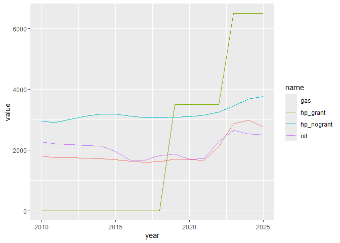

hpmicrosimr is an agent-based model simulation framework describing home energy efficiency and heating technology system upgrades by $`\approx 800`$ Irish owner-occupier households. Typically the model is initialised in 2015 and is run to 2040 or 2050. Agent characteristics are based on survey data collected in 2024.
This is the development, but fully working, version of hpmicrosimr. The main functionality is (1) a detailed model of financial return on household energy investments including choice of heating technology (2) an initialiser, (3) an updater and (4) runABM. Agents live on a artificial social network to allow peer effects in heat pump adoption to be described.
The heating systems included in the current version of hpmicrosimr are oil, solid_fuel, gas, electric and air source heat_pumps. There are two underlying space heating upgrade processes describe by hpmicrosimr at each time step. The most common event is failure and replacement of the current heating system.Failure probability is described by a Weibull distribution with technology-specific factors. The current version of hpmicrosimr assumes that the full heating requirement is supplied by the primary heating source. Backup secondary and tertiary heat sources do not play a role in the modelling. Agents choose between replacing the current fuel source with the same tech or adopting a heat pump. Risk aversion and “status quo bias” lowers the rate of adoption of heat pumps even in cases where this offers a better financial return. Possibilities such as oil $`\rightarrow`$ gas are excluded as this is not an option for households not near the gas network.
A less common, but more significant, event from the point of view of energy efficiency is the decision by a household to carry out a home energy efficiency retrofit. The rate at which households take this option is set by a parameter p. fit from calibration to historical data. The household investment decision involves a choice of $`BER`$ upgrade from $`BER_{old} \rightarrow BER_{new}`$, as well as a potential technology shift from $`tech_{old} \rightarrow tech_{new}`$. The household may also choose to retain their current heating system. This choice may be advantageous if the expected residual value of the existing asset is high. A function optimise_upgrade() determines the optimum upgrade choice, including the effect of all currently applicable grants.
Applications of hpmicrosimr are to project energy efficiency outcomes based on future policy scenarios (such as WEM/WAM), impacts on CO2 emissions, and associated cost-benefit analysis of generous incentive schemes.
There are large behavioural preferences that influence energy efficiency outcomes. There is strong evidence (Coyne & Denny) of “temperature take-back” or rebound effects following space heating efficiency upgrades. hpmicrosimr
A separate package hpmicrocalibrater is used to generate the model weights and thresholds and are provided in a dataset agents_init attached to hpmicrosimr.
Installation
To install the latest development version of hpmicrosimr:
remotes::install_github("https://github.com/Phalacrocorax-gaimardi/hpmicrosimr")Financial Returns
Householders face a complex decision when considering home energy upgrades. hpmicrosimr has a number of functions that determine the financially optimum upgrade, taking grantsinto account. The financial return must be sufficient to overcome any behavioural correction factors such as risk aversion, hassle, present bias, likely rebound etc before adoption occurs.
First load in the technical and cost scenario parameters for 2026 params. A set of technology specific cost parameters are contained in tech_parms and are assumed to be fixed (apart from skilled labour cost).
library(hpmicrosimr)
params <- scenario_params(sD,2026)
tech_params <- tech_params_fun()
#optimise_upgrade(ber_old=180,tech_old = "oil",house_type="detached",2003,region="Munster",floor_area=100,params, is_fuel_allowance=FALSE)The optimum upgrade in this case is to a B1 with a switch to a Heat Pump. However, replacing their oil boiler is a close second. Note that this calculation assumes no change in the heating comfort level demanded by households. This assuming is relaxed during the calibration stage when behavioural parameters are introduced.
efficiency retrofit cost model
The default cost model for energy efficiency improvements used by hpmicrosimr does not consider specific measures such as lift insulation, new windows etc. Instead it is based on a marginal cost model $`\frac{k_0}{BER^{\alpha}}`$. This reflects the steep increase in that upgrade costs required to reach the most efficient ratings A2 etc. The resulting efficiency upgrade matrix is shown below.
library(hpmicrosimr)
params <- scenario_params(sD,2025)
#HLI upgrades from 3.3 to 2.3 (the value of params$hli_heat_pump_threshold)
hpmicrosimr::retrofit_cost_model_logistic(3.3,2.3,"semi_detached",2,"Dublin",120,scenario_params(sD,2026))
#> [1] 19503.48
#HLI upgrade from 2.3 to 1.3 becomex expensive
hpmicrosimr::retrofit_cost_model_logistic(2.3,1.3,"semi_detached",2,"Dublin",120,scenario_params(sD,2026))
#> [1] 51356.53Heating system capital and operating costs
Capital costs for each technology depend on the time of installation, the system capacity (kW), whether the system replaces an earlier system of the same fuel type, etc. For example, the influence of grants is shown in the example below.
library(hpmicrosimr)
params <- scenario_params(sD,2026)
tech_params <- tech_params_fun()
#18kW output heat pump cost before grant
heating_system_capital_cost("heat_pump",kW=18,installation_type="new",house_type="detached",construction_year=2000,grant_type="None",params)
#> $cost
#> [1] 21580
#>
#> $grant
#> [1] 0
#>
#> $cost_after_grant
#> [1] 21580
#effect of grants
heating_system_capital_cost("heat_pump",18,"new","detached",2000,"BetterEnergyHomes",params)
#> $cost
#> [1] 21580
#>
#> $grant
#> [1] 6500
#>
#> $cost_after_grant
#> [1] 15080Annual operating costs are sensitive to HLI which determines the heat requirement of the property. These depend on the current time params$yeartime but also the efficieny (equivalent to the installation time in hpmicrosimr) of the system. This is because efficiency has changed significantly in the past e.g. with the introduction of condensing boilers.
library(hpmicrosimr)
params <- scenario_params(sD,2026)
tech_params <- tech_params_fun()
#C3 rating
heating_system_operating_cost(hli=4,tech="oil",installation_time=2003,floor_area=100,params,include_rebound=FALSE)
#> [1] 4296.048
#B1 rating
heating_system_operating_cost(hli=2.4,tech="oil",installation_time=2003,floor_area=100,params,include_rebound=FALSE)
#> [1] 2637.629The notional operating costs calculated above assume standard heating season conditions and a fully heated property (include_rebound=FALSE). Operating costs calculated when households trade comfort for cost should be calculated using include_rebound=TRUE. Assuming a default rebound of 50% ( params$r.):
library(hpmicrosimr)
params <- scenario_params(sD,2026)
print(paste("default rebound",params$rho))
#> [1] "default rebound "
tech_params <- tech_params_fun()
#C3 rating
heating_system_operating_cost(hli=4,tech="oil",installation_time=2003,floor_area=100,params,include_rebound=TRUE)
#> [1] 3055.184
#B2 rating
heating_system_operating_cost(hli=2.4,tech="oil",installation_time=2003,floor_area=100,params,include_rebound=TRUE)
#> [1] 1894.29Effective Annual Costs
A key financial concept for the modelling is Effective Annual Cost (EAC). The EAC is the annual “bill”. This includes the actual heating bill as well as an annualised capital cost of heating technology and fabric upgrades undertaken. For example, a heat pump is adopted if the EAC gain relative to a competing technology such as gas is sufficient. This is a complex calculation because the optimal BER upgrade for gas and heat pumps are not the same. For real technologies with uncertain lifetimes, EAC declines as the lifetime of the system is approached. hpmicrosimr calculates EAC and expected system lifetimes using a set of technology-specific Weibull hazard functions. The parameters of the failure model is contained in tech_failure_params.
Effective annual costs (EACs) of heating technologies are assume to changed over time due installation (labour) costs, efficiency gains, fuel cost changes and grants. To illustrate this, early year EACs for heat pump, gas and oil systems installed during 2010-2025 is shown below, using the hpmicrosimr::annualised_heating_system_cost(). The property has BER of 175kWh/m2/year in this example. The impact of the introduction of capital grants in 2018 for heat pumps is obvious. This calculation suggests that heat pumps are the lowest cost for this C1/C2 rated household but this assumes that a substantial use of night-rated electricity. The rebound effect is not included. Rebound lowers the operating cost and therefore makes heat pumps appear less attractive.
#> Warning: package 'ggplot2' was built under R version 4.4.3
#> ── Attaching core tidyverse packages ──────────────────────── tidyverse 2.0.0 ──
#> ✔ dplyr 1.1.4 ✔ readr 2.1.5
#> ✔ forcats 1.0.0 ✔ stringr 1.5.1
#> ✔ ggplot2 4.0.1 ✔ tibble 3.2.1
#> ✔ lubridate 1.9.3 ✔ tidyr 1.3.1
#> ✔ purrr 1.0.2
#> ── Conflicts ────────────────────────────────────────── tidyverse_conflicts() ──
#> ✖ dplyr::filter() masks stats::filter()
#> ✖ dplyr::lag() masks stats::lag()
#> ℹ Use the conflicted package (<http://conflicted.r-lib.org/>) to force all conflicts to become errors
Equivalent annual cost
Initialiser
The function initialise_agents() generates an initial state of the population of agents at a specific time.
This function does quite a bit of work behind the scenes. It is based on 2024 survey data, projected backwards to, say, 2015. It imputes missing values of BER, construction year and household income, for example. It also imputes the floor area of the property. If the initialisation time of the ABM is set to 2015, then only houses constructed before 2015 are included. This gives a full decade for model calibration, but at the cost of a reduced sample size. Note that houses built after 2015 are not eligible for energy efficiency grants, apart from solar PV.
If the installation year of the current heating system stated in the survey is later then 2015 then an installation date before 2015 is inferred for the earlier system. It is assumed that the heating technology used by the household in 2015 is the same as the technology used in 2024. The only exception is for heat pumps where it is assumed that heat pumps adopted after 2015 replaced an earlier gas or oil system. initialise_agents() also does a number of other recodings of the survey variables. The complete set of survey questions and responses are provided in the datasets hpmicrosimr::hp_questions and hpmicrosimr::hp_qanda.
The initial state contains all data needed to evaluate EACs for each agent for all possible technology choices. It uses the survey input data for owner-occupiers hp_survey_oo. initialise_agents() imputes missing values of BER ratings (based on modelling of the SEAI BER dataset), household income etc. It also imputes the total floor area of the property statistically based on number of bedrooms, region, area_type etc. A new initial state is generated for each ABM run (randomisation). This ensures that the results do not depend on a particular values of statistically imputed variables.
Example: initial state rebound effect
The example below illustrates the use of initialise_agents. The initial annual heating requirements for each household is calculated. The figure shows the resulting distribution of a kWh/year values with and without rebound of 30%.
library(hpmicrosimr)
library(ggplot2)
params <- scenario_params(sD,2015)
agents_in <- initialise_agents(sD,2015, cal_run=sample(1:100,1))
#> Joining with `by = join_by(q6)`
#> Joining with `by = join_by(qc2)`
#> Joining with `by = join_by(q1)`
#> Joining with `by = join_by(serial)`
#> Joining with `by = join_by(qh)`
heat <- agents_in %>% dplyr::rowwise() %>% dplyr::mutate(q_norebound=space_heating_requirement(hli,floor_area,rebound=1,params))
heat <- heat %>% dplyr::rowwise() %>% dplyr::mutate(q_rebound=space_heating_requirement(ber,floor_area,rebound=0.3,params))
heat <- heat %>% dplyr::select(serial,q_norebound,q_rebound) %>% tidyr::pivot_longer(cols=-serial)
heat %>% dplyr::filter(value < 1e+5) %>% ggplot(aes(value,fill=name))+geom_density(alpha=0.5) #+ facet_wrap(.~name)
In the above example, 792 households is equivalent to initial theoretical heating requirement of 19.5 TWh with 30% rebound for Ireland as a whole. Without rebound it is equivalent to $`\approx`$ 26 TWh.
The heating requirements or Final Energy Consumption (FEC) will change as the ABM runs and agents make upgrade choices. The FEC is not very sensitive to the heating technology choices by the agents. On the other hand, CO2 emissions are sensitive to technology choices.
Example: Updater
update_agents is the core function that advances the system by one time step
library(hpmicrosimr)
help("update_agents")
#> starting httpd help server ... done